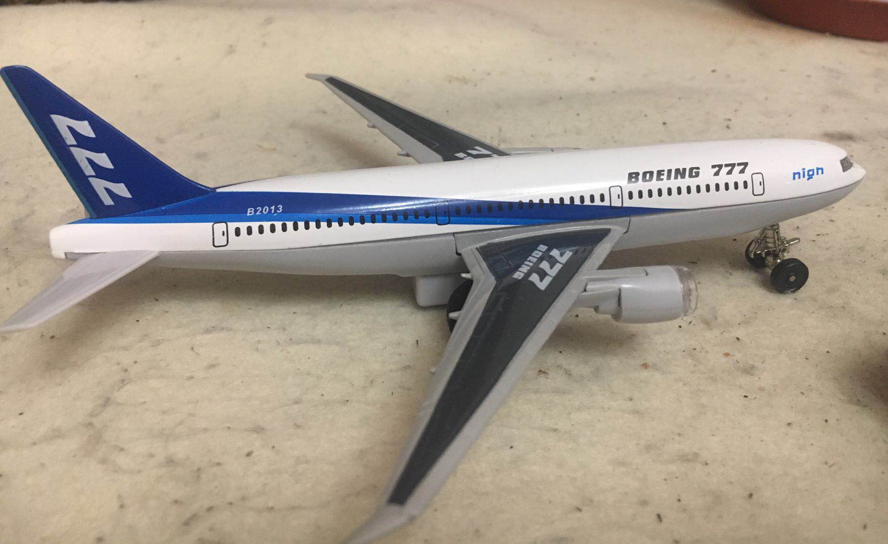

波音777是一款由美国波音公司制造的中远程双引擎宽体客机，是目前全球最大的双引擎宽体客 机，三级舱布置的载客量由283人至368人，航程由5,235海里至9,450海里(9,695公里至17, 500公里)。波音777采用圆形机身设计，起落架共有14个机轮，是美国波音公司研制的双发中远程宽体 客机。波音777在规格上介于波音767-300和波音747-400之间。1990年10月29日正式启动研制计划 ，1994年6月12日第1架波音777首次试飞，1995年4月19日获得欧洲联合适航证和美国联邦航空局型 号合格证，1995年5月30日获准180分钟双发延程飞行， 1995年5月17日首架交付用户美国联合航空。波音777在大小和航程上介于B767-300和B747-400之间， 具有座舱布局灵活、航程范围大和不同型号能满足不断变化的市场需求的特点。
